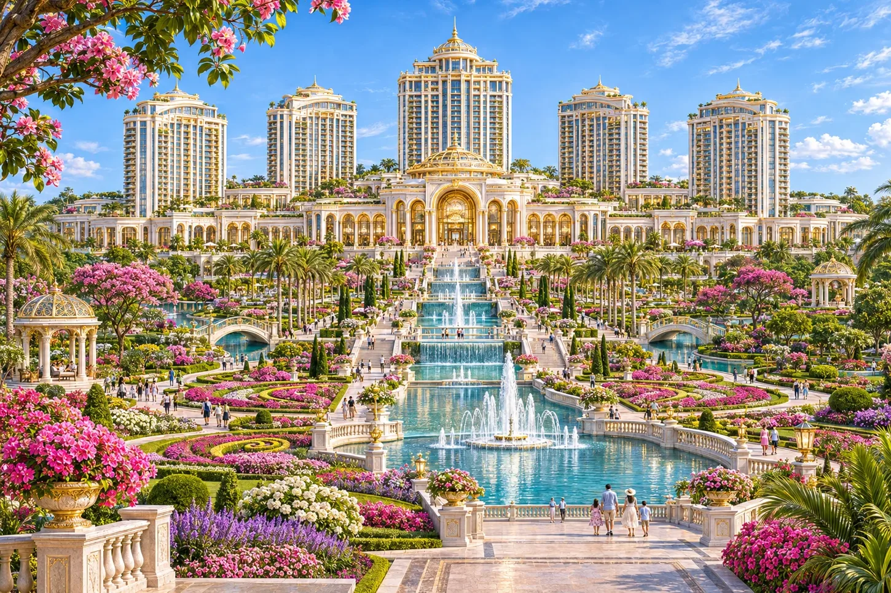
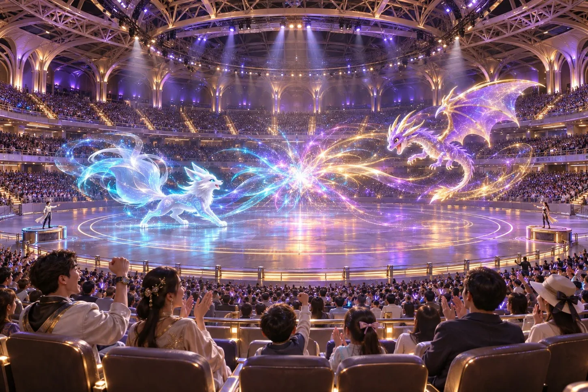

THE EDEN PALACE
エデン・パレスと公開庭園
中央台地に立つ旗艦ホテル。南側の公開庭園は、宿泊客以外も散策できます。客室や滞在プランは宿泊デモでご覧いただけます。
行き方：パレス中央駅｜駅から本館ロビーまで徒歩約8〜12分

CENTRAL / EDEN ISLAND
島のまんなかで、庭と舞台へ。 旅の起点は中央台地のエデン・パレス。公開庭園を散策したあとは、南にあるコロシアムで公演や大会を。
THINGS TO DO
THE EDEN PALACE
中央台地に立つ旗艦ホテル。南側の公開庭園は、宿泊客以外も散策できます。客室や滞在プランは宿泊デモでご覧いただけます。
行き方：パレス中央駅｜駅から本館ロビーまで徒歩約8〜12分

ARENA & LIVE EVENTS
中央台地の南にある地下会場。大規模公演や競技大会の舞台です。イベントの開催日時やチケットの販売情報は、この試作版では扱っていません。
行き方：コロシアム駅｜パレス中央から列車で約6分
交通時間は作中の目安です。記載がない場合、待ち時間・駅から施設への移動は含みません。
KEEP EXPLORING